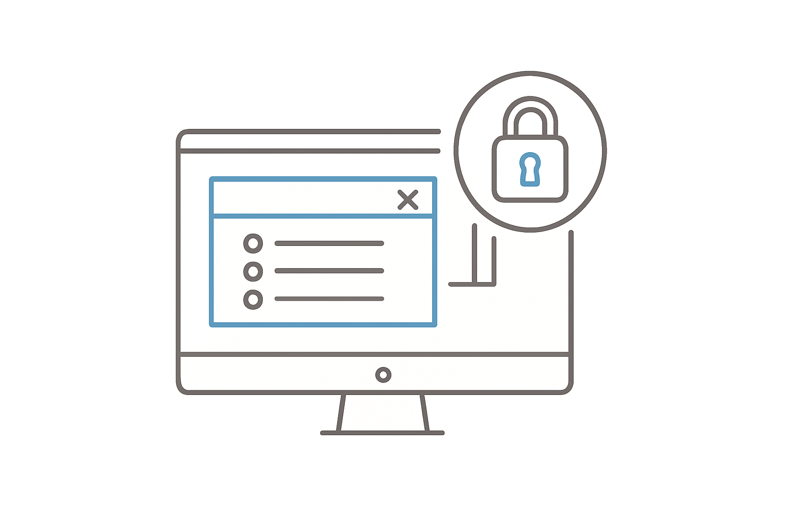

We're About to Lock Your Device

If you have any other apps or software running, please exit out of them now
If you attempt to use other programs or apps during the exam, your scores will be canceled
Click Next now to complete check in